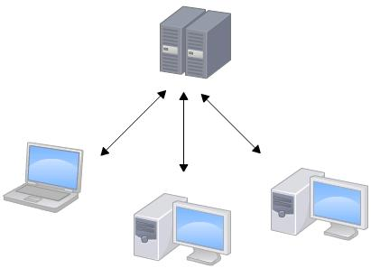
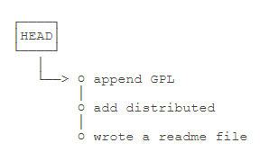
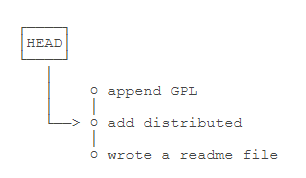
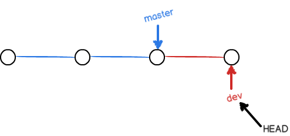
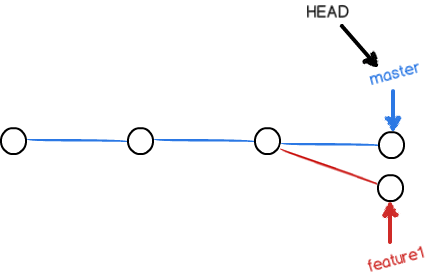

参考资料：廖雪峰git教程)
1.git是什么？
Git是目前世界上最先进的分布式版本控制系统（没有之一）。那什么是版本控制系统？
如果你用Microsoft Word写过长篇大论，那你一定有这样的经历：
想删除一个段落，又怕将来想恢复找不回来怎么办？有办法，先把当前文件“另存为……”一个新的Word文件，再接着改，改到一定程度，再“另存为……”一个新文件，这样一直改下去，最后你的Word文档变成了这样：

于是你想，如果有一个软件，不但能自动帮我记录每次文件的改动，还可以让同事协作编辑，这样就不用自己管理一堆类似的文件了，也不需要把文件传来传去。如果想查看某次改动，只需要在软件里瞄一眼就可以，岂不是很方便？这个软件用起来就应该像这个样子，能记录每次文件的改动：这样，你就结束了手动管理多个“版本”的史前时代，进入到版本控制的20世纪。
2.集中式VS分布式
集中式：
先说集中式版本控制系统，版本库是集中存放在中央服务器的，而干活的时候，用的都是自己的电脑，所以要先从中央服务器取得最新的版本，然后开始干活，干完活了，再把自己的活推送给中央服务器。中央服务器就好比是一个图书馆，你要改一本书，必须先从图书馆借出来，然后回到家自己改，改完了，再放回图书馆。

缺点：
- 集中式版本控制系统最大的毛病就是必须联网才能工作，如果在局域网内还好，带宽够大，速度够快，可如果在互联网上，遇到网速慢的话，可能提交一个10M的文件就需要5分钟，这还不得把人给憋死啊。
- 而且集中式版本控制系统的中央服务器要是出了问题，所有人都没法干活了。
分布式：
分布式版本控制系统根本没有“中央服务器”，每个人的电脑上都是一个完整的版本库，这样，你工作的时候，就不需要联网了，因为版本库就在你自己的电脑上。既然每个人电脑上都有一个完整的版本库，那多个人如何协作呢？比方说你在自己电脑上改了文件A，你的同事也在他的电脑上改了文件A，这时，你们俩之间只需把各自的修改推送给对方，就可以互相看到对方的修改了。
在实际使用分布式版本控制系统的时候，其实很少在两人之间的电脑上推送版本库的修改，因为可能你们俩不在一个局域网内，两台电脑互相访问不了，也可能今天你的同事病了，他的电脑压根没有开机。因此，分布式版本控制系统通常也有一台充当“中央服务器”的电脑，但这个服务器的作用仅仅是用来方便“交换”大家的修改，没有它大家也一样干活，只是交换修改不方便而已。
优点：
和集中式版本控制系统相比，分布式版本控制系统的安全性要高很多，因为每个人电脑里都有完整的版本库，某一个人的电脑坏掉了不要紧，随便从其他人那里复制一个就可以了。
3.创建版本库
3.1创建版本库
1.选择一个合适的地方，创建一个空目录。pwd命令用于显示当前目录。在下面例子中，这个仓库位于
/Users/vikee/learngit。1
2
3mkdir learngit
cd learngit
pwd2.通过
git init命令把这个目录变成Git可以管理的仓库：git init。瞬间Git就把仓库建好了，而且告诉你这里是一个空的仓库empty Git repository，细心的读者可以发现当前目录下多了一个.git的目录，这个目录是Git来跟踪管理版本库的，没事千万不要手动修改这个目录里面的文件，不然改乱了，就把Git仓库给破坏了。
3.2把文件添加到版本库
首先这里再明确一下，所有的版本控制系统，其实只能跟踪文本文件的改动，比如TXT文件，网页，所有的程序代码等等，Git也不例外。版本控制系统可以告诉你每次的改动，比如在第5行加了一个单词“Linux”，在第8行删了一个单词“Windows”。而图片、视频这些二进制文件，虽然也能由版本控制系统管理，但没法跟踪文件的变化，只能把二进制文件每次改动串起来，也就是只知道图片从100KB改成了120KB，但到底改了啥，版本控制系统不知道，也没法知道。
假设我们在learngit目录下（子目录也行，因为这是一个Git仓库，放到其他地方Git再厉害也找不到这个文件）编写了一个readme.txt文件，现在我们要将其上传到版本库中。
1.用命令
git add告诉Git，把文件添加到仓库，若没有任何显示的话表明添加成功：1
git add readme.txt
2.用命令
git commit告诉Git，把文件提交到仓库,其中git commit命令的-m后面输入的是本次提交的说明，可以输入任意内容，当然最好是有意义的，这样你就能从历史记录里方便地找到改动记录。git commit命令执行成功后会告诉你，1 file changed：1个文件被改动（我们新添加的readme.txt文件）；2 insertions：插入了两行内容（readme.txt有两行内容）。1
2
3
4$git commit -m "wrote a readme file"
[master (root-commit) eaadf4e] wrote a readme file
1 file changed, 2 insertions(+)
create mode 100644 readme.txt
为什么Git添加文件需要add，commit一共两步呢？因为commit可以一次提交很多文件，所以你可以多次add不同的文件，比如：1
2
3git add file1.txt
git add file2.txt file3.txt
git commit -m "add 3 files."
4.版本管理
4.1版本回退
在你不断对文件进行修改，然后不断提交修改到版本库里，就好比玩RPG游戏时，每通过一关就会自动把游戏状态存盘，如果某一关没过去，你还可以选择读取前一关的状态。有些时候，在打Boss之前，你会手动存盘，以便万一打Boss失败了，可以从最近的地方重新开始。Git也是一样，每当你觉得文件修改到一定程度的时候，就可以“保存一个快照”，这个快照在Git中被称为commit。一旦你把文件改乱了，或者误删了文件，还可以从最近的一个commit恢复，然后继续工作，而不是把几个月的工作成果全部丢失。
- 1.
git log:可以查看提交历史，命令显示从最近到最远的提交日志，以便确定要回退到哪个版本。1
2
3
4
5
6
7
8
9commit 1094adb7b9b3807259d8cb349e7df1d4d6477073 (HEAD -> master)
Author: Michael Liao <askxuefeng@gmail.com>
Date: Fri May 18 21:06:15 2018 +0800
append GPL
commit e475afc93c209a690c39c13a46716e8fa000c366
Author: Michael Liao <askxuefeng@gmail.com>
Date: Fri May 18 21:03:36 2018 +0800
add distributed
如果嫌输出信息太多，看得眼花缭乱的，可以试试加上--pretty=oneline参数，一大串类似1094adb...的是commit id（版本号）,这是一个SHA1计算出来的一个非常大的数字，用十六进制表示，而且你看到的commit id和我的肯定不一样，以你自己的为准。为什么commit id需要用这么一大串数字表示呢？因为Git是分布式的版本控制系统，后面我们还要研究多人在同一个版本库里工作，如果大家都用1，2，3……作为版本号，那肯定就冲突了。1
2
3$ git log --pretty=oneline
1094adb7b9b3807259d8cb349e7df1d4d6477073 (HEAD -> master) append GPL
e475afc93c209a690c39c13a46716e8fa000c366 add distributed
- 2.
git reset:回退到之前的版本。在Git中，用HEAD表示当前版本，也就是最新的提交1094adb...（注意我的提交ID和你的肯定不一样），上一个版本就是HEAD^，上上一个版本就是HEAD^^，当然往上100个版本写100个^比较容易数不过来，所以写成HEAD~1001
2$git reset --hard HEAD^
HEAD is now at e475afc add distributed
想要再返回当前版本时，使用git log指令找到最新版本的提交ID，假设最新版本的提交ID是1094adb...可以使用如下命令返回,版本号没必要写全，前几位就可以了，Git会自动去找，至少前5位。1
2$ git reset --hard 1094a
HEAD is now at 83b0afe append GPL
Git的版本回退速度非常快，因为Git在内部有个指向当前版本的HEAD指针，当你回退版本的时候，Git仅仅是把HEAD从指向append GPL(最新版本)改为指向add distributed（上一版本）。然后顺便把工作区的文件更新了。所以你让HEAD指向哪个版本号，你就把当前版本定位在哪。


- 3.
git reflog：查看命令历史，以便确定要回到未来的哪个版本。当你回退到上一版本退出命令行界面之后，找不到实际上文件最新版本的commit id时,就可以用git reflog找到之后的id。1
2
3
4
5$ git reflog
e475afc HEAD@{1}: reset: moving to HEAD^
1094adb (HEAD -> master) HEAD@{2}: commit: append GPL
e475afc HEAD@{3}: commit: add distributed
eaadf4e HEAD@{4}: commit (initial): wrote a readme file
4.2工作区和暂存区
工作区（Working Directory）：
在电脑里能看到的目录，比如下面的learngit文件夹就是一个工作区。
版本库（Repository）：
工作区有一个隐藏目录.git，这个不算工作区，而是Git的版本库。
Git的版本库里存了很多东西，其中最重要的就是称为stage（或者叫index）的暂存区，还有Git为我们自动创建的第一个分支master，以及指向master的一个指针叫HEAD。
前面讲了我们把文件往Git版本库里添加的时候，是分两步执行的：
- 1.用
git add文件添加进去，实际上就是把文件修改添加到暂存区； - 2.用
git commit提交更改，实际上就是把暂存区的所有内容提交到当前分支。在创建Git版本库时，Git自动为我们创建了唯一一个master分支，所以，现在，git commit就是往master分支上提交更改。可以简单理解为，需要提交的文件修改通通放到暂存区，然后，一次性提交暂存区的所有修改。
使用git status查看一下工作区各个文件的状态。modified表明文件被修改了。Untracked则表明文件是新增的，还未被添加到暂存区中。

4.3管理修改
为什么Git比其他版本控制系统设计得优秀？因为Git跟踪并管理的是修改，而非文件。
1.假设一个文件read.txt增加了一行内容。然后使用
git add将文件添加到缓存区。1
2
3
4
5cat readme.txt
Git is a distributed version control system.
Git is free software distributed under the GPL.
Git has a mutable index called stage.
Git tracks changes.//增加的内容2.在上一步的基础上，我们又修改了文件的内容。然后使用
git commit将文件提交到当前分支。1
2
3
4
5$ cat readme.txt
Git is a distributed version control system.
Git is free software distributed under the GPL.
Git has a mutable index called stage.
Git tracks changes of files.
提交后，再使用git status状态,发现第二次的修改没有更新，只有第一次的修改更新到了当前分支中。我们可以仔细分析一下以上文件修改和提交的过程：第一次修改 -> git add -> 第二次修改 -> git commit。不难发现第二次修改之后并没有使用git add提交文件到缓存区，所以第一次的修改被提交了，第二次的文件并没有被提交。
- 3.提交后，使用
git diff HEAD -- readme.txt命令可以查看工作区和版本库里面最新版本的区别。
4.4撤销修改
修改文件内容后想恢复到上一个版本时。使用git checkout -- file可以丢弃工作区的修改，该指令的意思是，把readme.txt文件在工作区的修改全部撤销，这里有两种情况,总之就是让这个文件回到最近一次git commit或git add时的状态：
- 1.
readme.txt自修改后还没有被放到暂存区，现在，撤销修改就回到和版本库一模一样的状态； - 2.
readme.txt已经添加到暂存区，又作了修改，现在，撤销修改就回到添加到暂存区后的状态。
注意：git checkout -- file命令中的–很重要，没有--，就变成了“切换到另一个分支”的命令，
当文件已经被添加到暂存区，还没有被提交。想要撤回修改可以使用以下两步：
1.用命令
git reset HEAD <file>可以把暂存区的修改撤销掉（unstage），重新放回工作区,git reset命令既可以回退版本，也可以把暂存区的修改回退到工作区。当我们用HEAD时，表示最新的版本。1
2
3$ git reset HEAD readme.txt
Unstaged changes after reset:
M readme.txt2.使用第一步的指令，再用
git status查看当前状态，可以发现暂存区是干净的，工作区有修改。那丢弃工作区的修改，可以使用上面方法中的git checkout -- file指令。
4.5删除文件
- 1.一般情况下，通常直接在文件管理器中把没用的文件删了，或者用
rm命令删除：rm test.txt; - 2.这时Git知道你删除了文件，因此，工作区和版本库不一致了，
git status命令会立刻告诉你哪些文件被删除了; - 3.现在你有两个选择,一是确实要从版本库中删除该文件，那就用命令
git rm删掉，并且git commit：1
2
3
4
5
6
7$ git rm test.txt
rm 'test.txt'
$ git commit -m "remove test.txt"
[master d46f35e] remove test.txt
1 file changed, 1 deletion(-)
delete mode 100644 test.txt
另一种情况则是不小心删错了，因为版本库里还有最新的版本，所以可以很轻松地把误删的文件恢复到最新版本：1
$ git checkout -- test.txt
注意：git checkout其实是用版本库里的版本替换工作区的版本，无论工作区是修改还是删除，都可以“一键还原”。但如果是从来没有被添加到版本库就被删除的文件，是无法恢复的！
5.分支管理
5.1创建与合并分支
在版本回退里，每次提交，Git都把它们串成一条时间线，这条时间线就是一个分支。截止到目前，只有一条时间线，在Git里，这个分支叫主分支，即master分支。HEAD严格来说不是指向提交，而是指向master，master才是指向提交的，所以，HEAD指向的是当前分支。
- 1.开始的时候，
master分支是一条线，Git用master指向最新的提交，再用HEAD指向master，就能确定当前分支，以及当前分支的提交点,每次提交，master支都会向前移动一步，这样随着你不断提交，master分支的线也越来越长。
- 2.当我们创建新的分支，例如
dev时，Git新建了一个指针叫dev，指向master相同的提交，再把HEAD指向dev，就表示当前分支在dev上,Git创建一个分支很快，因为除了增加一个dev指针，改改HEAD的指向，工作区的文件都没有任何变化！
- 3.从现在开始，对工作区的修改和提交就是针对
dev分支了，比如新提交一次后，dev指针往前移动一步，而master指针不变。
- 4.假如我们在
dev上的工作完成了，就可以把dev合并到master上。Git怎么合并呢？最简单的方法，就是直接把master指向dev的当前提交，就完成了合并。
- 5.合并完分支后，甚至可以删除
dev分支。删除dev分支就是把dev指针给删掉，之后就剩下了一条master分支。
具体的指令：
查看分支：git branch。git branch命令会列出所有分支，当前分支前面会标一个*号
创建分支：git branch <name>
切换分支：git checkout <name>
创建+切换分支：git checkout -b <name>
合并某分支到当前分支：git merge <name>
删除分支：git branch -d <name>
5.2解决冲突
当一个文件的不同分支，master分支和feature1分支各自都分别有新的提交，变成了这样：

这种情况下，Git无法执行“快速合并”，只能试图把各自的修改合并起来，Git告诉我们，当前的文件存在冲突，必须手动解决冲突后再提交。
git status也可以告诉我们冲突的文件。解决冲突的方法如下：
1.直接查看存在冲突文件的内容,Git用
<<<<<<<，=======，>>>>>>>标记出不同分支的内容。1
2
3
4
5
6
7
8
9Git is a distributed version control system.
Git is free software distributed under the GPL.
Git has a mutable index called stage.
Git tracks changes of files.
<<<<<<< HEAD
Creating a new branch is quick & simple.
=======
Creating a new branch is quick AND simple.
>>>>>>> feature12.我们修改文件之后如下后保存。
1
Creating a new branch is quick and simple.
3.再使用
git commit指令将修改提交。1
2
3$ git add readme.txt
$ git commit -m "conflict fixed"
[master cf810e4] conflict fixed
现在master分支和feature1分支变成了下图所示：
- 4.最后，删除feature1分支：
1
2$ git branch -d feature1
Deleted branch feature1 (was 14096d0).
注意:
用git log --graph命令可以看到分支合并图。1
2
3
4
5
6
7
8
9
10
11
12
13
14$ git log --graph --pretty=oneline --abbrev-commit
* cf810e4 (HEAD -> master) conflict fixed
|\
| * 14096d0 (feature1) AND simple
* | 5dc6824 & simple
|/
* b17d20e branch test
* d46f35e (origin/master) remove test.txt
* b84166e add test.txt
* 519219b git tracks changes
* e43a48b understand how stage works
* 1094adb append GPL
* e475afc add distributed
* eaadf4e wrote a readme file